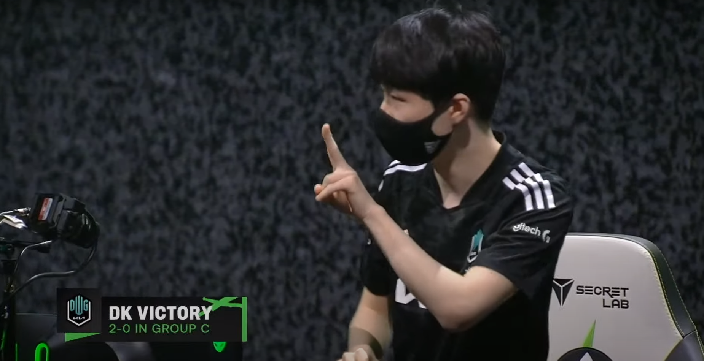

league of legends
csgo
valorant
news
league of legends
csgo
valorant
news
El conjunto koreano campeon de la LCK y actual campeon del mundo, en esta primera edicion de MSI despues de la pandemia que sigue pasando a nivel mundial. Estan demostrando porque son los favoritos para llevarse el titulo.
Estan liderando el grupo C del MSI en los cuales estan equipos como Gillete Infinity Esports (LATAM), Cloud9 (NA) y Detonation Focus Me (JP). Tras vencer en el inicio del torneo a Cloud 9 y al dia siguente a Gillete Infinity Esports. El conjunto koreano demostro lo comodo que se sienten en este evento, sus partidas fueron rapidas, en su primera partida contra el conjunto de NA comandados por Perkz logro ver un poco el rayo de luz el conjunto de la nube, pero llego a un punto en el que DWG KIA dijo hasta aqui y empezo a sacar ventaja sobre los de NA. Jugadores a destacar sin duda, Khan, Canyon y Ghost. Khan por su lado carreando desde el lado superior del mapa comiendose vivo a fudge sin darle chance al top laner Australiano y siendo muy impactante en las peleas 5v5, Canyon basicamente siendo Canyon no? Teniendo impacto en todos los lados del mapa, robando jungla enemiga, haciendo objetivos y siendo relevante en las TF'S con esa Morgana, Ghost aguantando con su Jhin en el carril inferior a causa de malas iniciaciones de Beryl pero sin ir mas alla llevandose la victoria de forma contundente. Ahogando poco a poco a un Cloud 9 en las nubes.
Por otra parte ya nos remontamos al segundo dia del evento, el cual se abria con dos juegos seguidos del conjunto chino RNG pero eso lo veremos despues... Ahora vallamos a lo que nos interesa a todos realmente, el tercer enfrentamiento del dia entre Gillete Infinity Esports vs DWG KIA, el conjunto koreano devuelta siendo favoritos para llevarse el juego pero nosotros los latinos siempre con espereranza de que se saque el juego adelante ya que es un BO1 hay posibilidades reales pero simplemente no se pudo, son muy buenos estos tipos, entonces bueno esta vez todo el team de DWG KIA solido en todos los lados del mapa sin dejar respirar al conjunto de LATAM obligandolos al error y al choque que fue en un constante ahogamiento por parte del equipo koreano, todo empezaba con una primera sangre en el carril inferior a causa de una buena iniciacion de Ackerman(Alistar) sobre Ghost(Varus) pero no fue suficiente ya que el sett de Beryl fue astuto esperando al junte de los dos carrileros de Infinity y ejecutando una muy buena E sobre los 2 y tirando ignicion por sobre la Kalista de papi Whitelotus y provocando la primera sangre del juego. Y ahi fue un constante ahogamiento del conjunto campeon del mundo y de la LCK DWG KIA y asi terminando el 2-0 y liderando fuertemente el grupo C de este MSI 2021, mañana se enfrentara a Detonation Focus Me, esperando otra victoria del conjunto koreano y llevandolos a un 3-0 y ya con un pie adentro de la siguente etapa del torneo.
